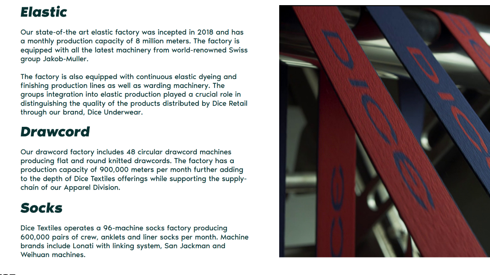

Textiles & Retail Integration
Specialized textile production supporting Dice Textiles, Dice Apparel, and Dice Retail through high-capacity elastic and drawcord manufacturing.
Our state-of-the-art elastic factory was incepted in 2018 and has a monthly production capacity of 8 million meters. The factory is equipped with all the latest machinery from world-renowned Swiss group Jakob-Muller.
The factory is also equipped with continuous elastic dyeing and finishing production lines as well as warding machinery. The group's integration into elastic production played a crucial role in distinguishing the quality of the products distributed by Dice Retail through our brand, Dice Underwear.
Our drawcord factory includes 48 circular drawcord machines producing flat and round knitted drawcords. The factory has a production capacity of 900,000 meters per month, further adding to the depth of Dice Textiles' offerings while supporting the supply chain of our Apparel Division.
